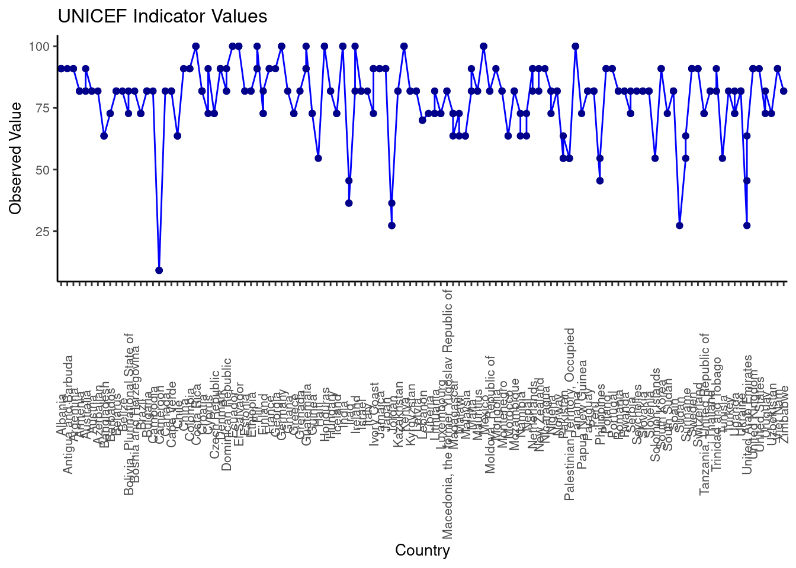
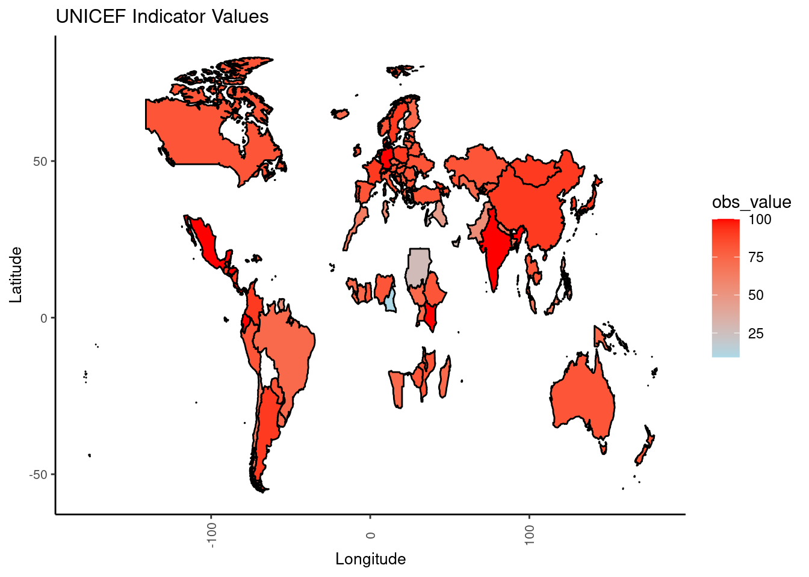
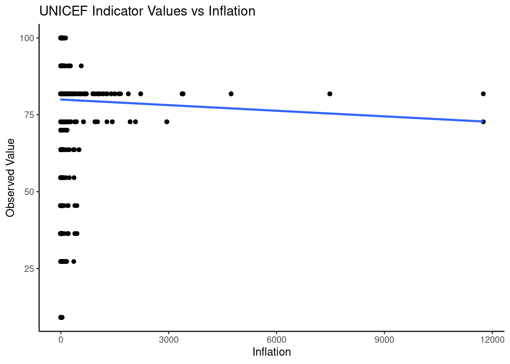
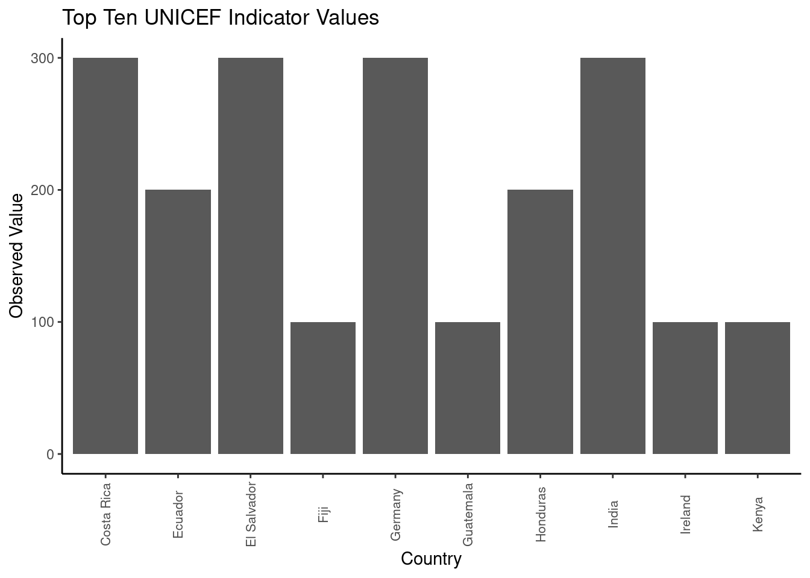

Title: Commitment To Gender Equality In Marriage And Family Based on 2022 UNICEF Data
Author: Gavin Gorman
Date: 22/04/2024
Format: html
Introduction: This assignment evaluates the presence and impact of legal provisions and regulations designed to foster gender equality within the contexts of marriage and family dynamics, utilizing data from the year 2022. My focus is on examining if existing legal frameworks guarantee equal rights, safeguard against violence, and uphold other pertinent rights associated with gender equality in family and marriage.
The following objects are masked from 'package:stats':
filter, lag
The following objects are masked from 'package:base':
intersect, setdiff, setequal, union
Reading Dataset
# Read the data from the CSV filedata <-read_csv("unicef_indicator_1.csv")
Rows: 267 Columns: 14
── Column specification ────────────────────────────────────────────────────────
Delimiter: ","
chr (7): country, alpha_2_code, alpha_3_code, indicator, sex, unit_of_measur...
dbl (3): numeric_code, year, obs_value
lgl (4): unit_multiplier, observation_status, observation_confidentaility, t...
ℹ Use `spec()` to retrieve the full column specification for this data.
ℹ Specify the column types or set `show_col_types = FALSE` to quiet this message.
metadata <-read_csv("unicef_metadata.csv")
Rows: 13293 Columns: 11
── Column specification ────────────────────────────────────────────────────────
Delimiter: ","
chr (3): country, alpha_2_code, alpha_3_code
dbl (8): numeric_code, year, Population, total, GDP per capita (constant 201...
ℹ Use `spec()` to retrieve the full column specification for this data.
ℹ Specify the column types or set `show_col_types = FALSE` to quiet this message.
Creating Line Graph
# Create a line graphline_graph <-ggplot(data, aes(x = country, y = obs_value, group =1)) +geom_line(color ="blue") +geom_point(color ="blue4") +labs(title ="UNICEF Indicator Values", x ="Country", y ="Observed Value") +theme_classic() +theme(axis.text.x =element_text(angle =90, vjust =0.5, size =8),plot.title =element_text(size =12),axis.title =element_text(size =10),axis.text =element_text(size =8))print(line_graph)

This graph illustrates the variance in commitment to gender equality across different countries. The data points reflect each country’s score, providing insight into the interplay between population trends and the efficacy of legal frameworks in implementing gender equality policies.
# Load the world datasetworld <-map_data("world")# Merge the data with the world datasetmerged_data <-inner_join(data, world, by =c("country"="region"))
Warning in inner_join(data, world, by = c(country = "region")): Detected an unexpected many-to-many relationship between `x` and `y`.
ℹ Row 1 of `x` matches multiple rows in `y`.
ℹ Row 765 of `y` matches multiple rows in `x`.
ℹ If a many-to-many relationship is expected, set `relationship =
"many-to-many"` to silence this warning.
# Create a choropleth mapchoropleth_map <-ggplot(merged_data, aes(x = long, y = lat, group = group, fill = obs_value)) +geom_polygon(color ="black") +scale_fill_gradient(low ="lightblue", high ="red") +labs(title ="UNICEF Indicator Values", x ="Longitude", y ="Latitude") +theme_classic() +theme(axis.text.x =element_text(angle =90, vjust =0.5, size =8),plot.title =element_text(size =12),axis.title =element_text(size =10),axis.text =element_text(size =8))print(choropleth_map)

The variation in scores across different nations emphasizes the differing levels of dedication to achieving gender equality within the legal structures that regulate marriage and family matters. Notably, only four countries have scored under 50%, with Cameroon registering the minimum at 9.09%. This situation urgently calls for focused legislative reforms. The notably low scores of Sudan (27.27%), along with Iraq and Jordan (each at 36.36%), highlight substantial deficiencies in legal protections. There is an immediate need for measures to reinforce these legal frameworks, enhance women’s rights, and foster equality within family relationships.
# Join the two datasets based on the country columnjoined_data <-inner_join(data, metadata, by ="country")
Warning in inner_join(data, metadata, by = "country"): Detected an unexpected many-to-many relationship between `x` and `y`.
ℹ Row 1 of `x` matches multiple rows in `y`.
ℹ Row 64 of `y` matches multiple rows in `x`.
ℹ If a many-to-many relationship is expected, set `relationship =
"many-to-many"` to silence this warning.
# Create a scatterplot with a linear regression linescatterplot <-ggplot(joined_data, aes(x = inflation, y = obs_value)) +geom_point() +geom_smooth(method ="lm", se =FALSE) +labs(title ="UNICEF Indicator Values vs Inflation", x ="Inflation", y ="Observed Value") +theme_classic()print(scatterplot)
`geom_smooth()` using formula = 'y ~ x'
Warning: Removed 3697 rows containing non-finite outside the scale range
(`stat_smooth()`).
Warning: Removed 3697 rows containing missing values or values outside the scale range
(`geom_point()`).

Scatter Plot
We can see above as inflation rises, the Legal Framework Implementation score tends to decrease slightly. This implies that higher inflation rates may correlate with lower scores in Legal Framework Implementation.
Creating Bar Chart
The attainment of flawless scores, marked at 100.00%, by countries such as Costa Rica, Ecuador, El Salvador, Fiji, Germany, Guatemala, Honduras, India, Ireland, Kenya, Mexico, and Panama, showcases their steadfast dedication to fostering gender equality within marriage and family legal frameworks. These nations stand out for their comprehensive legal protections that guarantee equality, rights, and opportunities for all individuals, irrespective of gender. This remarkable achievement indicates a significant level of progress and commitment towards creating a legal environment where gender does not dictate one’s rights and prospects within the realms of marriage and family life.
# Select the top ten rows of the datatop_ten <-head(data[order(-data$obs_value), ], 20)# Create a bar graphtop_ten_graph <-ggplot(top_ten, aes(x = country, y = obs_value)) +geom_bar(stat ="identity") +labs(title ="Top Ten UNICEF Indicator Values", x ="Country", y ="Observed Value") +theme_classic() +theme(axis.text.x =element_text(angle =90, vjust =0.5, size =8))print(top_ten_graph)

Conclusion: From our analysis in 2022, it’s clear that certain countries have made commendable progress in enacting laws that promote gender equality within the contexts of marriage and family life. However, a considerable number of nations still fall short in this regard. Countries such as Ireland, Costa Rica, and Germany are leading by example, while others, including Cameroon and Sudan, are in dire need of legal improvements. Our study reveals a correlation between inflation and a country’s progress in gender equality laws, underscoring the need for ongoing legal reform, especially during economic downturns. In essence, while some nations have achieved notable success in establishing laws that foster gender equality, there remains a substantial need for progress in others.